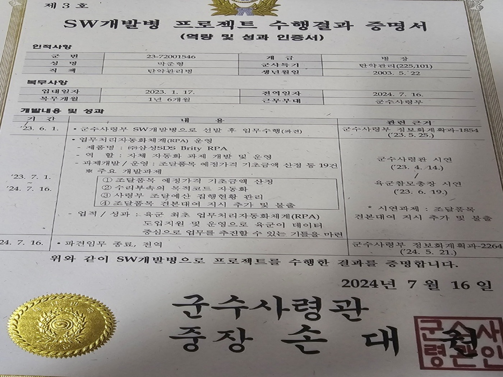
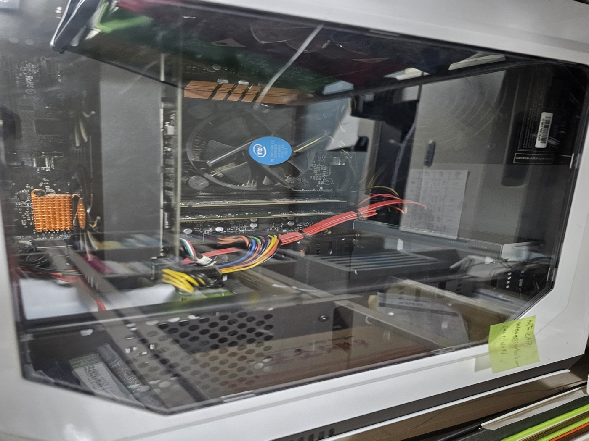

특별한 활동

욱군 AT 플랫폼 및 자동화 시스템 개발
육군 소프트웨어 개발병으로 선발되어 실제 데이터 플랫폼 제작과 자동화 업무 시스템 개발을 진행했습니다.
군 부대 빅데이터 전문가 인터뷰
군수 데이터 기반 수요예측 모델 전문가와 직접 인터뷰 하며 그 지식을 배웠습니다.

컴퓨터 직접 조립 및 개조
정해진 예산속에서 효율적으로 구매하기위해 직접 부품을 찾아보고 구매하였고 추가적으로 개조를 진행했습니다.